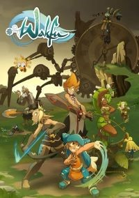
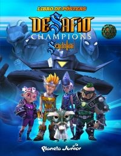

.png)
Príncipe de los dragones

| Estreno | 13 de abril de 2018 | Temporadas | 3 |
| Episodios | 27 |
| Duración | 26 minutos |
| Actores de voz | Jack De Sena, Sasha Rojen, Jason Simpson, Racquel Belmonte, Jesse Inocalla, Erik Dellums, Paula Burrows, Omari Newton, Vincent Tong, Rena Anakwe, Jonathan Holmes |
| Productor(es) | Aaron Ehasz y Justin Richmond |
Sinopsis:
En un mundo de fantasía en el continente de Xadia, que es rico en magia derivada de seis elementos primarios: el Sol, la Luna, las estrellas, la Tierra, el cielo y el océano. Siglos atrás, los dragones, elfos y humanos de Xadia vivían en paz. Sin embargo, los humanos, al no poder utilizar la magia de forma natural, comenzaron a usar la magia oscura, que se alimenta de la esencia vital de las criaturas mágicas. Como consecuencia, fueron expulsados hacia el oeste, y el continente se dividió en dos por un enorme río de lava.
Información obtenida de:Explore FANDOM
Wakfu
| Estreno | 30 de octubre de 2008 | Temporadas | 3 |
| Episodios | 65 Episodios + 2 Especiales + 3 OVA's |
| Duración | 22 minutos aprox. y 45 minutos aprox. (OVA's) |
| Actores de voz | Constanza Faraggi (1-2),Carlos Siller (3),Andrea Higa (1-2), Jocelyn Robles (3), Alejandro Graue (1-2), Miguel Ángel Ruiz (3), Mara Campanelli (1-2), Karen Vallejo (3), Jorge Riveros (1-2), Herman López (3),Lorena Muñoz (1-2), Héctor Moreno (3), Juan Manuel Echave, Adrián Wowczuk, Sebastián Castro Saavedra (1-2), Beto Castillo (3), Hernán Palma (1-2), Tommy Rojas (3). |
| Productor(es) | Ankama Animación y Anthony "Tot" Roux |
Sinopsis:
La trama de la serie tiene lugar 200 años después de la inundación que acabó con la era Dofus, transformando los continentes de la época en archipiélagos. Las aguas suben y la naturaleza se vuelve loca. Algunas cosas han sucedido y otras han terminado, pero el Wakfu, la energía creativa primordial del mundo, está perturbada por un ser misterioso.
En una pequeña isla de Amakna Nation, hay un pequeño pueblo perdido en el bosque llamado Emelka. En este pequeño pueblo comienza la epopeya de un joven llamado Yugo, que acaba de descubrir sus poderes, pero también sus orígenes.
Aquí es donde comienza todo.
Información obtenida de:Wikipedia
Carmen Sandiego

| Estreno | 18 de enero de 2019 | Temporadas | 4 |
| Episodios | 33 |
| Duración | 24–33 minutos |
| Actores de voz | Ivett Toriz, Armando Corona,Cynthia Chong,Jhonny Torres, José Luis Miranda,Ruth Toscano, Mayra Arellano,Luz Menchaca,Nicolás Frías,Valentina Souza,Ricardo Bautista,Rodrigo Carralero,Miguel de León,Héctor Moreno,Juan Alfonso Carralero,Teresa Ibarrola,Desireé González,José Ángel Torres,Liliana Barba ,Mónica Villaseñor,Valca Ponzanelli,Eduardo Curiel,César Terranova,Luis Navarro,Andrea Porras,Isa Romo, Gabriel Ortiz,Adriana Núñez,Rebeca Manríquez,Tania Becerra,Rafael Pacheco, Luzza Rodríguez,Eduardo Menez,Gaby Hernández,Hugo Navarrete. |
| Productor(es) | Brian Hulme |
Sinopsis:
la criminal Carmen Sandiego era perseguida por dos jóvenes por todo el mundo. Mientras era perseguida, se explicaban monumentos (y más cosas) de cultura general. La serie se podría calificar entre cómica y educativa, por lo que ha recibido varios premios por esta última labor, ya que es una serie que además de entretener, enseña al espectador.
Información obtenida de:EcuRed
Phineas and Ferb

| Estreno | 17 de agosto de 2007 | Temporadas | 4 |
| Episodios | 146 |
| Duración | 22 minutos |
| Actores de voz | Vincent Martella, Thomas Brodie-Sangster, Ashley Tisdale, Dee Bradley Baker, Dan Povenmire, Alyson Stoner, Caroline Rhea, Richard O'Brien, Marsh, Mitchel Musso, Bobby Gaylor, Maulik Pancholy, Kelly Hu, Olivia Olson, Tyler Alexander Mann |
| Productor(es) | Dan Povenmire and Jeff “Swampy” Marsh |
Sinopsis:
La serie sigue las aventuras de los hermanastros Phineas Flynn (Vincent Martella) y Ferb Fletcher (Thomas Sangster), que viven en la ciudad ficticia de Danville, en un área (nunca especificada) del Tri-State (los Tres Estados), ya que buscan formas de ocupar su tiempo durante sus vacaciones de verano.
Información obtenida de:Wikipedia
Sendokai
| Estreno | 10 de julio del año 2011 | Temporadas | 2 |
| Episodios | 52 |
| Duración | 12 minutos aprox. |
| Actores de voz | Melanie Henríquez,Álex de Porrata,Carmen Calvell,Ángel de Gracia, David Jenner, Ariadna Jiménez, Cesc Martínez, Rafael Turia, María Rosa Guillén,Xadi Mouslemeni, Rafael Turia,Carmen Ambrós, María Rosa Guillén,Ana Valeiras |
| Productor(es) | David Diéguez Redondo |
Sinopsis:
Zak, Cloe, Kiet y Fenzy son cuatro chicos de la Tierra muy poco populares y sin ningún talento para el deporte. Un día encuentran unos brazaletes que los transportan a otra dimensión. Allí conocen al maestro Tänpo, que les explica que el imperio de los Zorn está conquistando todas las dimensiones del Multiverso. La Tierra está en peligro y, si quieren salvarla, sólo habrá una manera...
Información obtenida de:Wikipedia